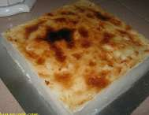

Good Noms
Gnoms > Simple Recipes > Kuih Bingka Beras: Coconut Rice Cake
Ingredients
- 150g rice flour
- 42g Mung Bean flour
- 15g Tapioca flour
- 600ml Coconut milk
- 400ml Water
- 170g sugar
- Pinch of salt
- 7 -10 Pandan leaves (I used frozen ones about 10 cm length)
- Cooking oil to grease pan or greaseproof baking paper
Method
- Pour 400 ml of warm to hot water and throw in pandan leaves to infuse its essence. When cool enough to touch, I squeeze the pandan leaves a few times. Discard the pandan leaves
- Measure all dry ingredients in a mixing bowl.
- Pour initial 150 - 200 ml of the coconut milk into dry ingredients and mix to a smooth paste. Add rest of the coconut milk once you think there's no lumps. Add in the 400 ml of pandan flavoured water - stir.
- Transfer mixture to a pot and cook over medium heat to start turning to low once you see curdling.
- Keep stirring until it majorly starts curdling. Don’t worry about the lumpiness yet. Take off pot from heat once mixture has curdled fully and turned into a fairly dry thick paste. You'll learn the "feel" of how "dry" it needs to be for the texture you like after the first time you cook!
- Using a strong spatula, stir out the lupiness and you can achieve a pretty smooth thick paste.
- Grease a ll x bb baking tray with cooking oil. Be generous. Or better alternative is use baking paper!
- Scrape paste into tray, even and smooth out and bake in preheated oven 220°C for 30 - 35 minutes
- Let it cool before attempting to remove it. I have had some trouble with this and I think the one time I was able to remove it successfully was when I really fully cooled the kuih to room temperature or when I use baking paper.

As you can see from the picture, there's a certain degree of "burnt". This is actually a desired effect rather than poor cooking skill. It makes it aromatic - bringing out the "roasted" coconuty smell and taste. It actually doesn't taste burnt!